Extensão OpenSprinklerPro
O OpenSprinklerPro é de um conjunto estendido de funções do OpenSprinkler para instalações que necessitam de integrações modernas de rádio, sensores enriquecidos, atualizações online, acesso a IA/MCP e monitoramento avançado. Ele se baseia nas funções de irrigação existentes: zonas, programas, ajuste de clima, logs, acesso remoto e interface gráfica web/app.
A linha de firmware OpenSprinklerShop (incluindo o OpenSprinklerPro) usa sua própria versão independente. A versão de firmware atual é 2.4.0(227).
Esta página é autônoma, mas faz referências a manuais mais detalhados se necessário.
Visão Geral
O OpenSprinklerPro adiciona estas extensões:
- Atualizações Online OTA com verificação de manifestos, status de atualização e endpoints de backups.
- Funções de rádio ESP32-C5: Modo Gateway/Cliente Zigbee e chaveamento de rádio IEEE 802.15.4.
- Sensores BLE para builds ESP32 suportados e sistemas OSPi com Bluetooth.
- Sensores em nuvem FYTA de temperatura e umidade.
- Matter e ESP RainMaker para integrações de casa inteligente no ESP32.
- Acesso MCP para assistentes de IA diretamente na firmware ou no servidor web Node.js externo.
- Eventos de notificação para MQTT, e-mail, IFTTT e relatórios de monitoramento.
Disponibilidade da plataforma
| Recurso | ESP32-C5 Zigbee | ESP32-C5 Matter | ESP32 / non-C5 | ESP8266 | OSPi |
|---|---|---|---|---|---|
| Irrigação básica, programas, UI web, logs | ✅ | ✅ | ✅ | ✅ | ✅ |
| Online OTA via UI web | ✅ | ✅ | ✅ | ✅ | ❌ |
| Atualizações via terminal/Git | ❌ | ❌ | ❌ | ❌ | ✅ |
| Certificados HTTPS / ACME | ✅ | ✅ | dependente de ESP32 | ❌ | ❌ |
| Zigbee / IEEE 802.15.4 | ✅ | ❌ | ❌ | ❌ | ❌ |
| Sensores BLE | ✅ | ✅ | dependente de flag de compilação | ❌ | ✅ via Linux |
| Integração Matter | ❌ | ✅ | dependente de rádio | ❌ | ❌ |
| ESP RainMaker | ✅ | ✅ | dependente de ESP32 | ❌ | ❌ |
| Sensores FYTA | ✅ HTTPS | ✅ HTTPS | ✅ HTTPS | ✅ apenas HTTP | ✅ HTTPS |
MCP integrado /mcp |
✅ ESP32 + USE_OTF |
✅ ESP32 + USE_OTF |
✅ ESP32 + USE_OTF |
❌ | ❌ |
| Servidor MCP Node.js externo | ✅ | ✅ | ✅ | ✅ | ✅ |
Notas:
- As variantes ESP32-C5 Zigbee e Matter são escolhas de firmware separadas. Zigbee e Matter não podem estar ativos ao mesmo tempo no mesmo rádio do ESP32-C5.
- Endpoints Zigbee exigem ESP32-C5 e
OS_ENABLE_ZIGBEE. - Endpoints BLE exigem ESP32 e
OS_ENABLE_BLE; o ESP8266 não oferece suporte a BLE. - O OSPi possui os endpoints REST comuns, sensores, FYTA e monitor comuns, mas não os endpoints de hardware do rádio do ESP32.
Veja também: Adendo de API e plataforma, CHANGELOG.
Nomes de funções de UI e capturas de tela móveis
As extensões do OpenSprinklerPro são operadas na interface gráfica normal. Os endpoints REST destinam-se principalmente a automação, diagnósticos e integrações; o fluxo do usuário começa nestas telas da interface.
| Extensão | Função / Caminho na Tela | Screenshot |
|---|---|---|
| Atualização online do firmware | Side menu → Online Update | 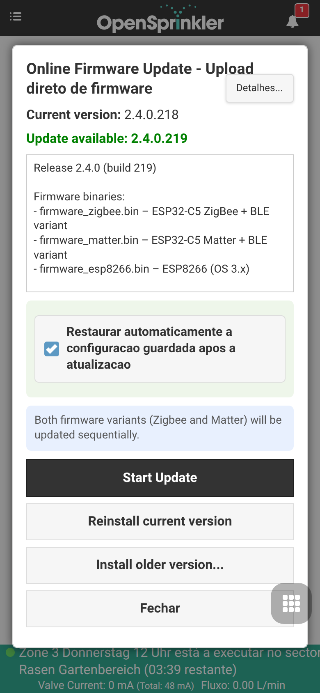 |
| Modo de rádio do ESP32-C5 / Seleção Matter | Side menu → Setup ESP32 Mode | 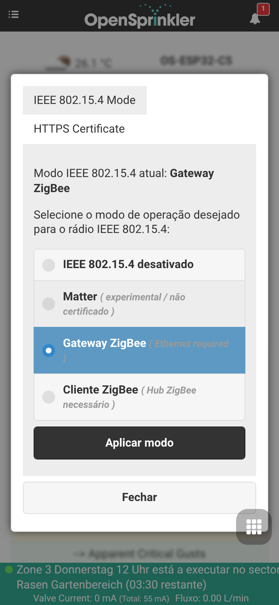 |
| Gateway Zigbee | Side menu → ZigBee Gateway | 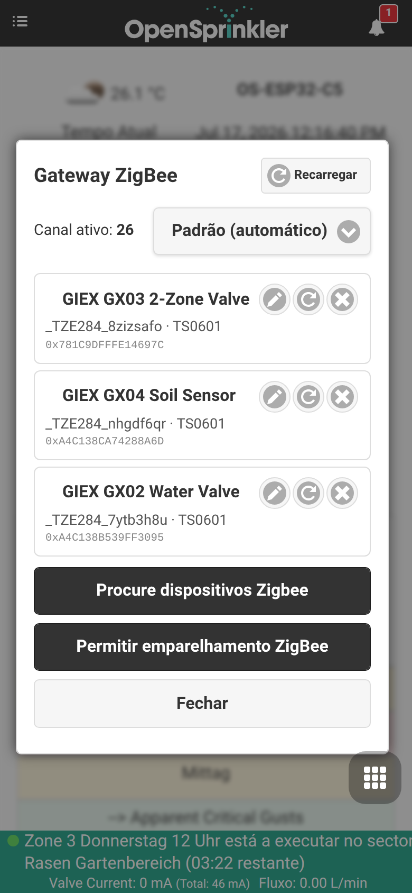 |
| ESP RainMaker | Side menu → RainMaker | 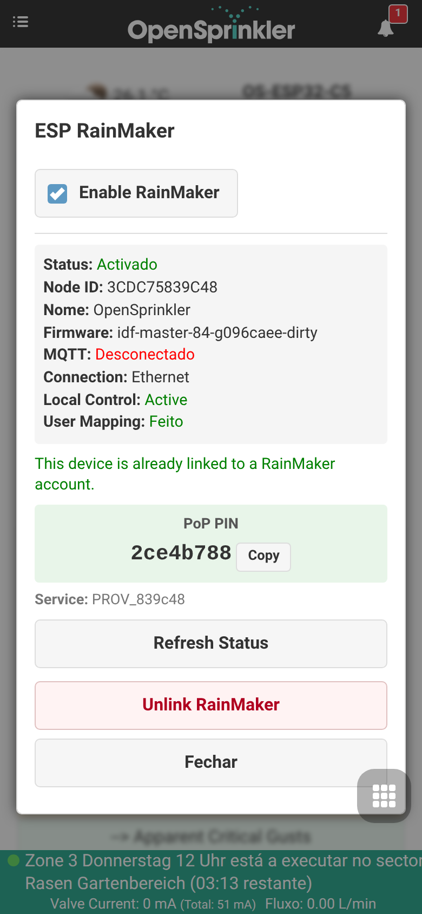 |
| MQTT, e-mail, IFTTT e notificações | Footer menu → Edit Options → Integrations | 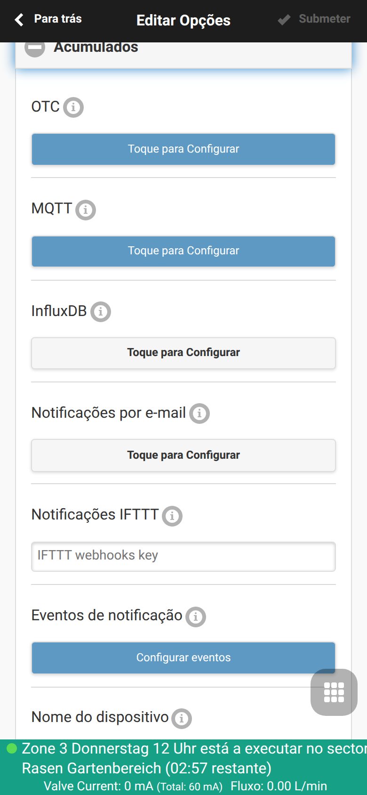 |
| Configuração de sensores e monitores | Footer menu → Analog Sensor Configuration | 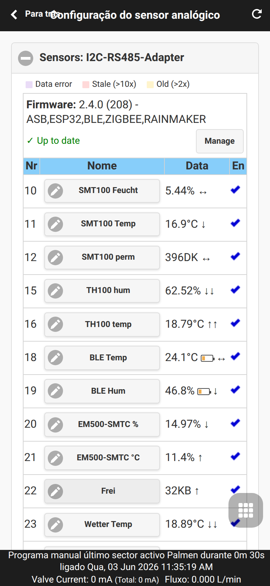 |
| Gráfico do sensor | Footer menu → Analog Sensor Configuration → Sensor Chart | 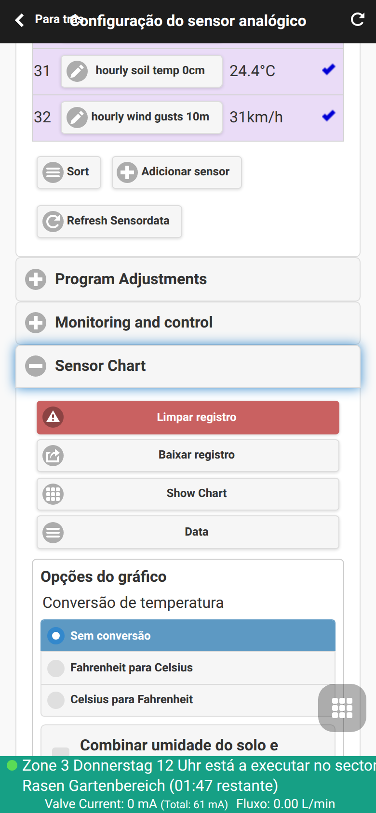 |
| Configuração FYTA | Footer menu → Analog Sensor Configuration → FYTA Setup | 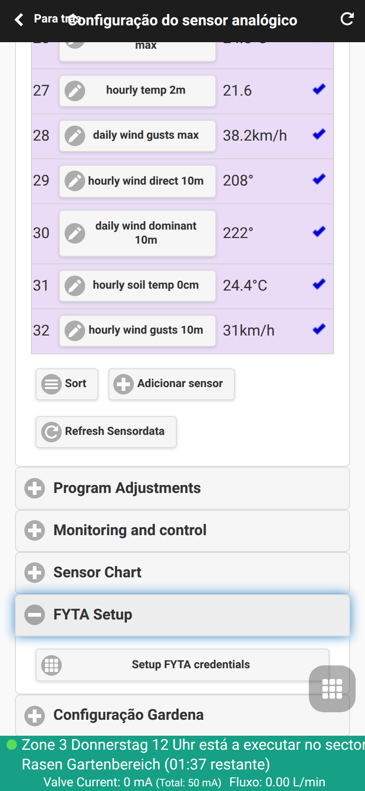 |
| Credenciais FYTA | Footer menu → Analog Sensor Configuration → FYTA Setup → Setup FYTA credentials | 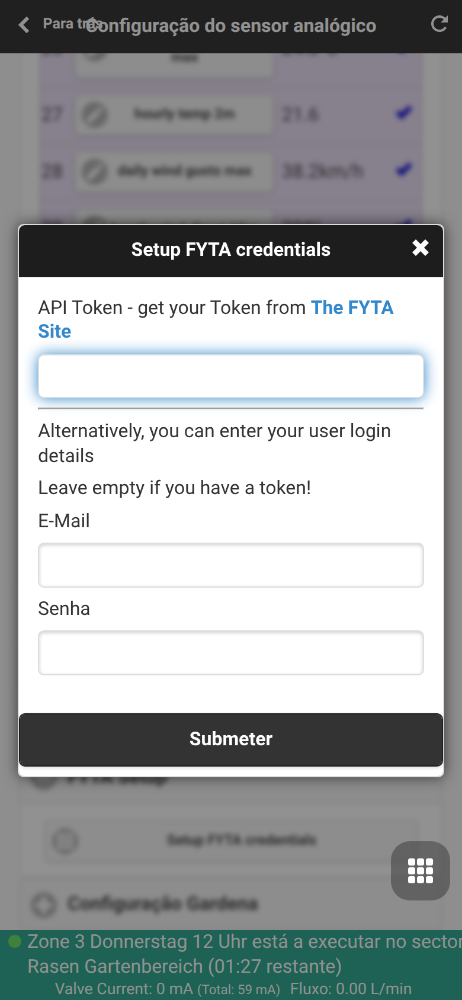 |
| Backup e restauração do sensor | Footer menu → Analog Sensor Configuration → Backup and Restore | 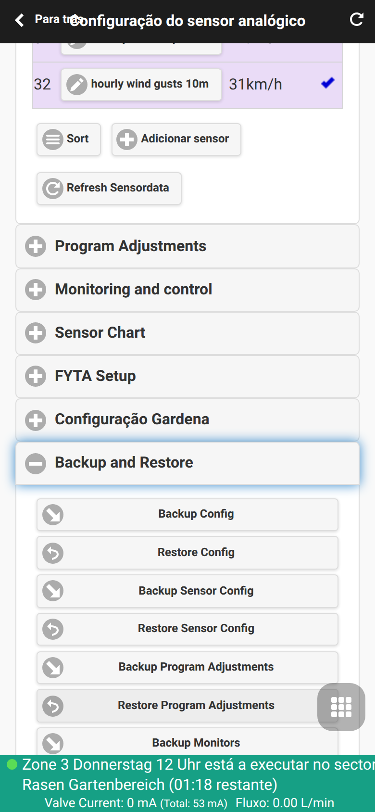 |
| Diagnósticos do sistema | Side menu → System Diagnostics | 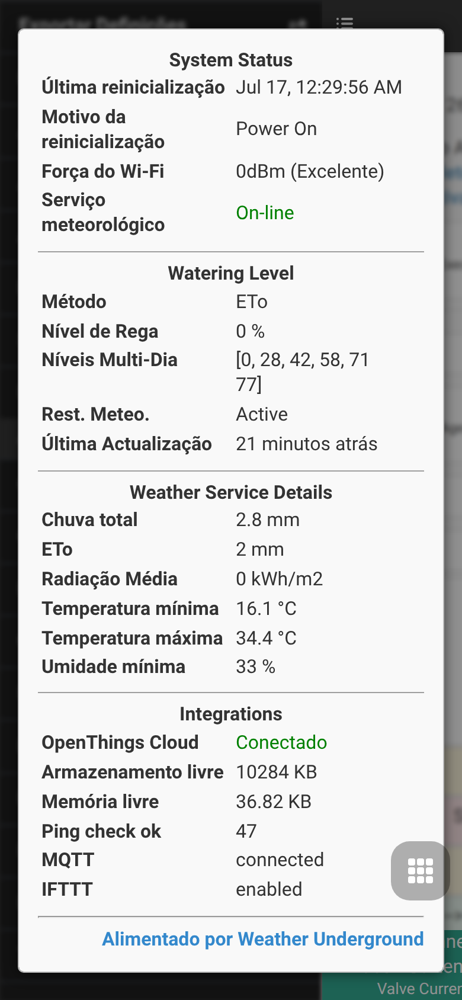 |
Atualização Online OTA
A firmware Pro adiciona gerenciamento de atualizações online em online_update.cpp / online_update.h. O controlador pode verificar um manifesto de atualização, detectar versões de firmware disponíveis, iniciar uma atualização e expor o progresso ou status do backup por meio de endpoints de API.
Função de UI: abra o menu lateral e escolha Online Update. Este é o fluxo recomendado para usuários comuns porque combina verificação de versão, backup, seleção de firmware, exibição de progresso e manipulação de restauração pós-reinicialização em um único diálogo.
Notas da plataforma:
- ESP32-C5 / ESP32 e ESP8266: A atualização via OTA está disponível por meio da interface gráfica e pelas rotas de upload manual de firmware.
- ESP32-C5: partições OTA duplas fornecem layouts de atualização orientados a reversão segura em caso de falha.
- OSPi: a atualização é realizada através do terminal/Git/scripts, e não pelo fluxo OTA integrado do sistema.
- As atualizações online exigem conexão ativa de Internet para download do manifesto.
Antes de atualizar, exporte a configuração do controlador a partir do menu lateral. Nos builds do ESP32 e ESP8266, o firmware atual também fornece um endpoint de backup completo (/ub) usado pela interface gráfica antes de iniciar o processo de atualização. Esse backup é diferente do /sx, que exporta apenas a configuração de sensores.
Modo ESP32 e Gerenciamento de Rádios
Em builds do ESP32-C5, a interface de usuário expõe uma tela para escolha do papel ativo de rádio. Use-a quando alternar entre os modos de firmware Matter, Zigbee Gateway e Zigbee Client. Uma alteração de modo atualiza a configuração do IEEE 802.15.4 e exige um reinício do aparelho antes que o novo stack de rádio seja iniciado.
Função de UI: abra o menu lateral e escolha Setup ESP32 Mode. Use Apply Mode apenas quando desejar alternar de forma intencional o modo de rádio ativo.
Orientação prática:
- Escolha Zigbee Gateway quando o controlador deve gerenciar dispositivos e sensores Zigbee locais por si só.
- Escolha Zigbee Client quando o OpenSprinkler deve ingressar em um coordenador Zigbee externo e expor canais de dados locais.
- Escolha Matter apenas se estiver na variante de firmware Matter; os protocolos Matter e Zigbee não podem operar simultaneamente no rádio do chip ESP32-C5.
- Prefira cabo Ethernet para instalações com alto tráfego Zigbee, visto que o rádio compartilha a banda de 2.4 GHz com o Wi-Fi e BLE.
Gateway Zigbee e Cliente Zigbee
O protocolo Zigbee é um recurso exclusivo das builds de firmware ESP32-C5 Zigbee. Não está disponível em builds ESP32-C5 Matter, ESP8266 ou OSPi.
Modo Gateway
No modo gateway, o ESP32-C5 gerencia os dispositivos Zigbee localmente:
- Permitir a entrada de dispositivos (Pairing): Emparelha novas válvulas sem foi e sensores através de uma janela temporária de permit-join (padrão de 60s, configurável até 180s).
- Lista de Dispositivos: Exibe uma lista em tempo real de dispositivos pareados, indicador de qualidade de sinal (LQI) e estados de bateria e energia.
- Mapeamento de Dispositivos Lógicos: Permite o mapeamento individual de aparelhos Zigbee complexos com múltiplas saídas de contatos ou sensores físicos (como a válvula GIEX GX02 ou relés multicanais), tratando-os como estações e sensores independentes e isolados no OpenSprinkler.
- Sincronização de Status Tuya DP: Garante operação confiável para válvulas Tuya inteligentes. Se nenhum DP de reporte de status estiver mapeado, o controle de estações adota o controle principal (
tuya_dp_value, ex: DP 2) para verificar a confirmação do acionamento, eliminando incoerências visuais no painel inicial. - Distribuição de Carga de Bateria: Repassa os reportes de telemetria de nível de bateria (via Tuya DP 108 ou ZCL Power Cluster
0x0021) para todos os canais de sensores virtuais vinculados ao mesmo endereço físico IEEE do dispositivo original de forma automática.
Função de UI: abra o menu lateral e escolha ZigBee Gateway para gerenciar dispositivos pareados e habilitar novas conexões de pareamento.
Modo Cliente
No modo cliente, o controlador OpenSprinkler conecta-se a uma rede de coordenador Zigbee externa existente e publica relatórios de seus status, incluindo sensores, zonas de rega, status dos programas e sensores de chuva.
Sensores BLE
O escaneamento e listagem de sensores através de conexões Bluetooth Low Energy (BLE) estão presentes nos builds do chip ESP32 com BLE ativo, incluindo os modelos ESP32-C5 Pro. O OSPi pode utilizar o suporte Bluetooth do Raspberry Pi sob Linux; o chip básico ESP8266 não oferece suporte a BLE.
Sensores FYTA
Os sensores de plantas da FYTA integram valores de umidade e temperatura do solo consultando periodicamente a API oficial da nuvem da FYTA. Os dados não são consumidos localmente via rádio direto. Consulte a Página dos Sensores FYTA para detalhes de login e de mapeamento de plantas.
Matter e ESP RainMaker
Matter
O suporte ao protocolo Matter está restrito às compilações feitas sob a diretiva de compilação ENABLE_MATTER (variante de firmware ESP32-C5 Matter). Expõe no endpoint local de API /jm os dados necessários para pareamento com Apple Home, Google Home, Amazon Alexa, incluindo status de comissionamento, URL de QR Code e código numérico de emparelhamento manual.
ESP RainMaker
O ESP RainMaker está presente nas plataformas ESP32 / ESP32-C5. Não está disponível para ESP8266 ou OSPi.
Função de UI: abra o menu lateral e escolha RainMaker para visualizar status de provisionamento, PIN de segurança PoP (Proof of Possession), ID do nó de usuário e ações de manutenção de claims.
Para detalhes das etapas e concorrência sobre recursos do rádio dual, consulte as Instruções de Provisionamento RainMaker.
Certificados HTTPS e ACME
Builds sob a plataforma ESP32 com suporte a criptografia na Web podem utilizar certificado TLS interno de fábrica, certificado PEM personalizado com chave privada carregados de forma manual, ou credenciais dinâmicas do ACME via Let's Encrypt. Os endpoints/tg, /tl, /ta, /tc e /tx gerenciam esses recursos.
Servidor MCP e Integração de IA
O OpenSprinklerPro possui duas alternativas de comunicação sob o Model Context Protocol (MCP) para uso de IA:
Endpoint /mcp Interno do Firmware
Processado nativamente de forma interna nos chips ESP32 e ESP32-C5 com USE_OTF ativado. Aceita conexões HTTP em formato POST contendo formatação JSON-RPC 2.0. Utiliza as mesmas diretrizes de segurança e de hash MD5 da REST API de controle.
Servidor MCP Node.js Externo
Disponível sob a pasta da biblioteca tools/mcp-server/. Roda de forma externa à placa do controlador (ex: em computadores locais ou servidores), comunicando via canais stdio com o controlador de destino por chamadas de REST API. Compatível com todas as plataformas: ESP8266, ESP32 e OSPi.
Consulte o manual de Uso e Configuração do Servidor MCP e as instruções de Criação de Programas Guiada por IA.
Eventos de Notificação
Permite a notificação programada de status operacionais através de relatórios sob serviços integrados de e-mails, publicação de tópicos MQTT e gatilhos de rotinas do IFTTT. Podem ser selecionados até 17 eventos do sistema (como início de irrigação, alertas de fluxo de bicos, reinicios inesperados, sobpressão ou warnings de monitoramentos lógicos de automação).
As configurações de faturamento e canais ativos ficam sob Edit Options -> Integrations.
Monitores e Alertas Locais
A interface de Monitoramento e Controle permite criar regras lógicas de cruzamento de limites e avisos sobre os valores colhidos por sensores virtuais de umidade, temperatura e fluxo.
Para fluxos de configuração, gráficos de histórico detalhados e procedimentos de backup e reestabelecimento de dados dos analógicos, acesse o guia de Configuração de Sensor Analógico e o manual de Automação e Monitores de Sensores.
Diagnósticos de Sistema e de Fluxo
A tela lateral de Diagnóstico do Sistema reúne informações técnicas em tempo real (como tempo de boot ativo, causa de reboots físicos, espaço em disco e memória livre do chip, status de conexões com os servidores de previsão meteorológica, integrador do InfluxDB e status da nuvem do OTC).